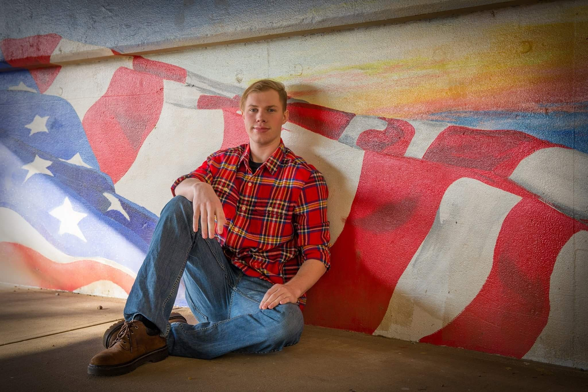
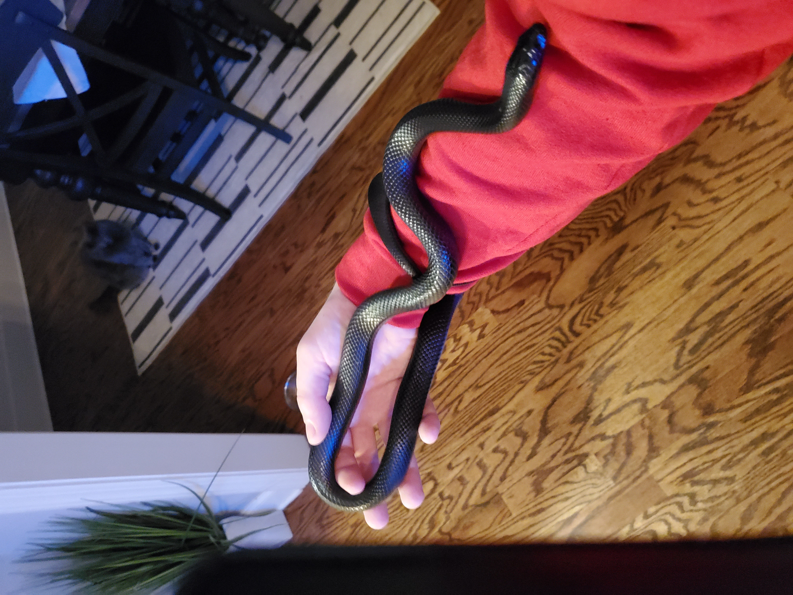
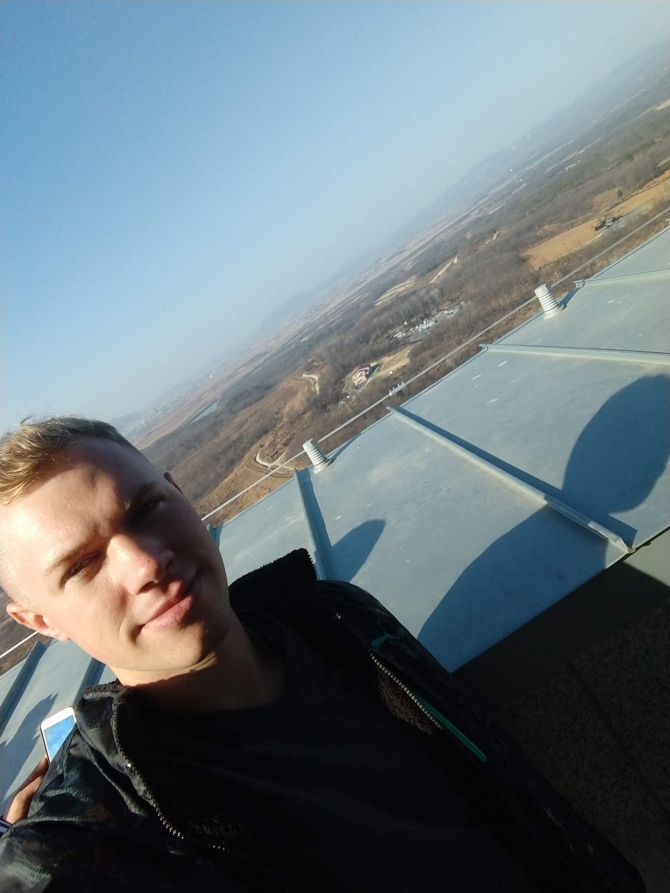
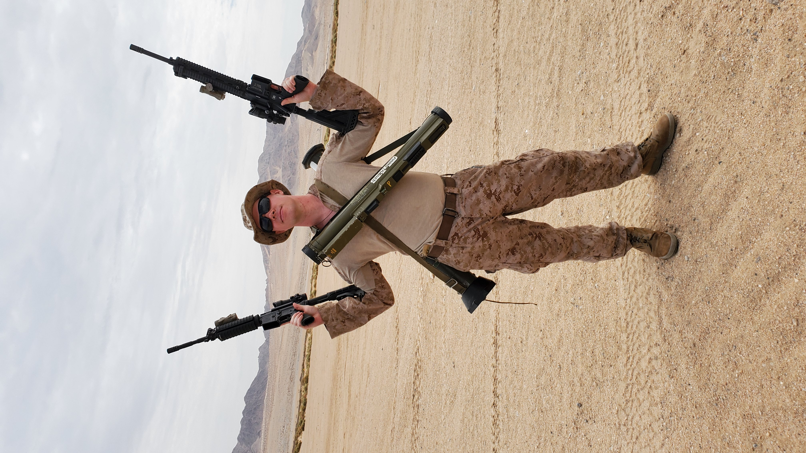
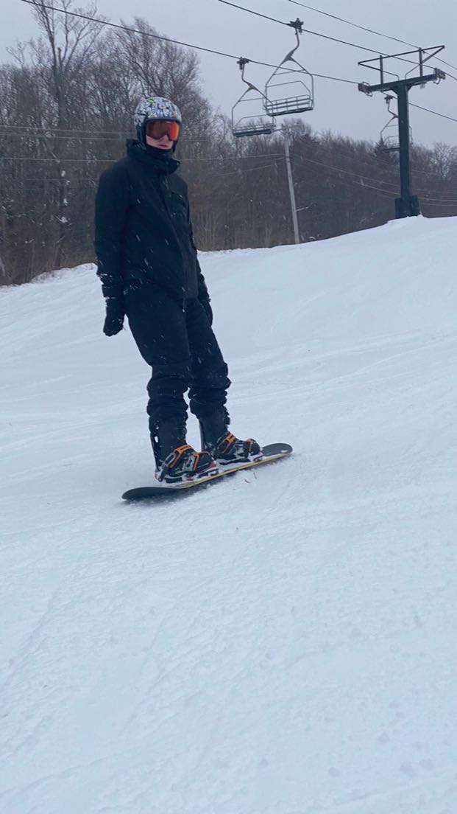

About Me
Family
Born and raised in Tennessee, I grew up with my single mom for most of my early life. She had me while she was still young, but I am so proud to be her son. Despite raising me at such a young age, she has climbed the medical field from a firefighter, to a paramedic, nurse, ER nurse, and finally a flight nurse. She met my now step-father when I was around 7-8 years old, and married him shortly after. He adopted me as his own shortly after their marriage, and I took the last name Biggs. He has been my biggest role model in life, and I hope to be the kind of man he is someday. A few years later, my parents had my younger sister, giving me my first and only sibling (so far). While we are over a decade apart in age, I still love her with all my heart and would do anything for her.
Life at a Glance
I was a quiet kid growing up. I did fine in school, was apart of my High-School JROTC program, and was team captain of the rifle team my last two years. I graduated high-school with a respectable 3.2 GPA, and decided that I was too immature to jump straight into college. I worked for about a year before signing up for the military, deciding to join the Marine Corps as a way to follow in the footsteps of my step-father. I was promoted to Private First Class in boot camp (a rare occurance) and finished the rest of my training soon after. I arrived at my unit and not a year later I volunteered to be deployed with a unit out of Salt Lake City, Utah. The Unit Deployment Program (UDP) lasted about a year long, and had us travel to Okinawa Japan, Mainland Japan, South Korea, and the Phillipines. The purpose of the deployment was to conduct bi-lateral training with other militaries, reinforce alliances, and to deter aggression from China and North Korea. After returning home from the UDP, I moved out and lived on my own for a little over two years while working. Unfortunatly, my leasing office raised the rent on me forcing me to move back in with the folks. I am grateful for this however, because it acted as a wakeup call and pushed me into going to college. I enrolled into Chattanooga State Community College, and am currently pursuing a degree in Computer Science.
Who Am I?
I consider myself to be creative and a good bit nerdy. I love my friends and family, because without them I am nothing. I take my hobbies seriously, probobly too seriously, and am always itching to create. I like to problem solve, make people laugh, and express myself through art. I am NOT the best at talking about myself, however.
